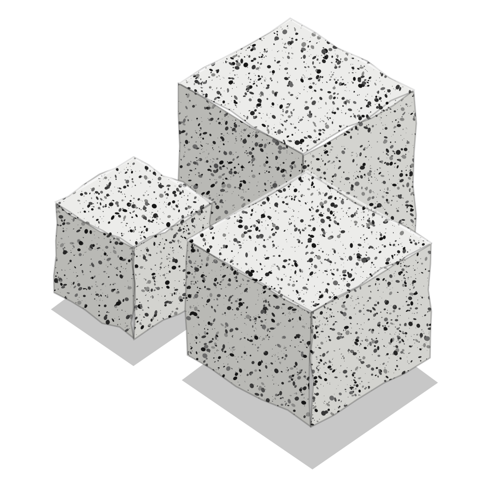

projeto · editado há 4 min
Cada nota vira um neurônio e cada ligação, uma fibra. Os dados vêm do índice descrito na ADR 002 Índice em SQLite e são relidos quando o cofre muda.
repulsão, molas e gravidadeVer também Desempenho do grafo.